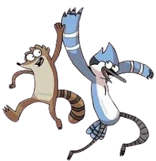

Regular Show está considerada una de las series más importantes de Cartoon Network en la década de 2010, dentro de una denominada «etapa dorada» del canal en la que también coincidió con Adventure Time, The Amazing World of Gumball, Steven Universe y Clarence entre otras series.
Después de que concluyese la serie, J. G. Quintel estuvo trabajando con Cartoon Network Studios en una nueva comedia de situación, Close Enough, centrada en la paternidad de una pareja millenial. Este proyecto, inicialmente previsto para el canal TBS, se mantuvo suspendido durante dos años hasta que fue recuperado por HBO Max en 2020. En total se estrenaron dos temporadas desde 2020 hasta 2022.
A raíz del éxito de Regular Show, algunos miembros del equipo han tenido la oportunidad de desarrollar su propia serie de televisión. El guionista Owen Dennis hizo para Cartoon Network la serie El tren infinito (Infinity Train), que contó con cuatro temporadas desde 2019 hasta 2021 y estuvo durante un tiempo en el catálogo de HBO Max, si bien fue retirada en 2022 por recortes presupuestarios.
A lo largo de su historia, la serie logró siete nominaciones a los Premios Annie, seis a los Premios Primetime Emmy y tres nominaciones a los premios infantiles de la BAFTA. El único galardón que se llevó fue el Primetime Emmy de 2012, en la categoría de «Mejor episodio corto en una serie de animación», por el capítulo Eggscelent correspondiente a la tercera temporada.
Un Show más se convirtió en un éxito instantáneo. Su primera y segunda temporada, que se emite los lunes, ocupó el número uno en su franja horaria entre todos demos boy clave a través de toda la televisión de acuerdo con Nielsen Media Research . El estreno del piloto fue visto por 2.097.000 espectadores. Para los siguientes episodios de la primera temporada, la audiencia aumentó en más del 10 por ciento respecto al período de tiempo del año anterior. Por ejemplo, la entrada fue visto por 1.339.000 niños de 2 a 11, un aumento del 65 por ciento respecto al año anterior de edades. También fue visto por 716.000 niños de 9-14 años de edad, un aumento del 43%. El segundo estreno de la temporada, "Ello Gov'nor", marcó un descenso de las cifras del primer estreno de la temporada. Ganó 2.067.000 visitas, pero marcó un aumento de la primera final de la temporada, que fue visto por 2.028.000 espectadores. El tercer estreno de la temporada, "Palo de Hockey", se produjo un descenso mayor en los espectadores, registrando 2 millón de espectadores. A medida que la serie continuó sus calificaciones crecieron, y la cuarta temporada de estreno, "Exit 9B", fue visto por 3.047.000 espectadores, un aumento significativo de las temporadas anteriores.





